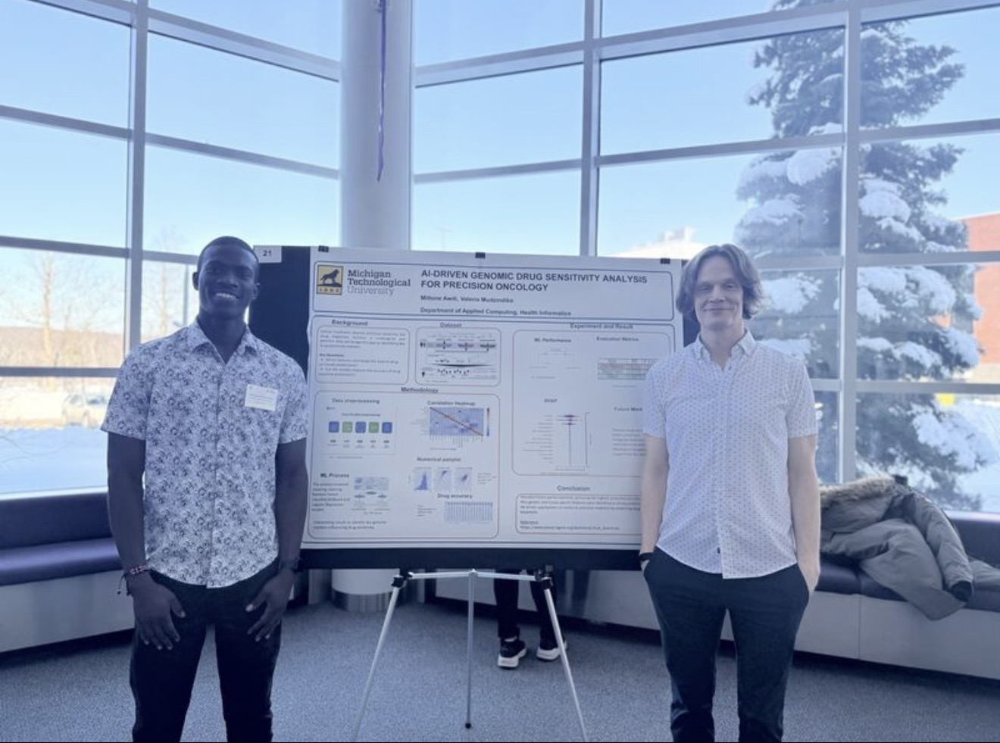

Predicting drug sensitivity in cancer cell lines
Valeria V. Mudzindiko and I used genomic and pharmacological data to study how cancer cell lines respond to drugs. We explored which features contributed to model predictions.
Health informatics researcher
I study how clinical AI tools shape decisions about care, and which patients those tools might overlook.
Featured research · Scoping review protocol
My scoping review examines how researchers identify and address bias in AI tools that support clinical decisions.
In postpartum care, when a tool flags patients for follow-up, who gets missed? I want to examine how often that happens across patient groups and how researchers can detect those differences before a tool enters practice.
Applied health informatics
Valeria V. Mudzindiko and I used genomic and pharmacological data to study how cancer cell lines respond to drugs. We explored which features contributed to model predictions.
Our prototype connects Fitbit heart rate and activity data to a Flutter app through AWS. My focus was how readings move from an authorized wearable connection into the app.
Our team prepared 292,364 records to study mental health treatment patterns. We handled missing values, encoded categories, and timed the preprocessing across Spark configurations.
This project explores how classifiers handle DNA sequence data, comparing precision, recall, and F1 scores alongside how readily each model’s predictions can be interpreted.
How does model choice affect accuracy and computing time? This project explores both questions using distributed processing and tabular data.
I worked on an interoperability pilot exploring how clinical systems can exchange information and match records to the right patient. The project brought together HL7 messages, FHIR resources, and a master patient index.
HL7 / FHIR · Python · Patient matching
About me
I earned my bachelor’s degree in Epidemiology and Biostatistics at Masinde Muliro University of Science and Technology in Kenya, then completed my master’s in Health Informatics at Michigan Technological University in 2025.
My experience spans malaria vector control research in Kenya and behavioral health data analysis in Alabama. Across these settings, I’ve been interested in how the information we collect influences the decisions we can make.